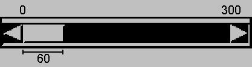

- java.lang.Object
-
- java.awt.Component
-
- java.awt.Scrollbar
-
- All Implemented Interfaces:
- Adjustable， ImageObserver， MenuContainer， Serializable， Accessible
public class Scrollbar extends Component implements Adjustable, Accessible
的Scrollbar类体现了一个滚动条，一个熟悉的用户界面对象。滚动条提供了一种方便的方法，允许用户从一系列值中选择一个。以下三个垂直滚动条可以作为滑块控件选择红色，绿色，和蓝色组成的一个颜色：
在这个示例中的每个滚动条都可以创建类似以下代码的代码：
redSlider=new Scrollbar(Scrollbar.VERTICAL, 0, 1, 0, 255); add(redSlider);
或者，一个滚动条可以代表一个值范围。例如，如果一个滚动条用于通过文本滚动，“泡沫”的宽度（也被称为“拇指”或“滚动框”）可以用来表示可见的文本的数量。这里是一个表示范围的滚动条的示例：

以这个例子中的气泡为代表的值范围是可见的金额。在这个示例中的水平滚动条可以创建与代码如下：
ranger = new Scrollbar(Scrollbar.HORIZONTAL, 0, 60, 0, 300); add(ranger);
注意滚动条的实际最大值是
maximum减去visible amount。在前面的例子中，因为maximum300，visible amount是60，实际的最大值为240。滚动条的跟踪范围是0 - 300。气泡的左边表示滚动条的值。通常情况下，用户通过鼠标与鼠标的一个手势改变滚动条的值。例如，用户可以拖动滚动条上下的“气泡”，或单击“滚动条”中的单位增量或块增量区域。键盘的手势也可以映射到滚动条上。按照惯例，这 页上和 下页键相当于单击滚动条的块增量和减量区域块。
当用户改变滚动条的滚动条的值，接收
AdjustmentEvent实例。滚动条处理此事件，将其传递给任何已注册的侦听器。任何对象，希望被通知到滚动条的值变化应实施
AdjustmentListener，包中的java.awt.event定义接口。听众可以添加和被调用的方法addAdjustmentListener和removeAdjustmentListener动态删除。的
AdjustmentEvent类定义了五种类型的调整事件，这里列出：AdjustmentEvent.TRACK发出当用户拖动滚动条的泡沫。AdjustmentEvent.UNIT_INCREMENT时发出在水平滚动条左侧的箭头，用户点击，或顶端的箭头的垂直滚动条，或使等效手势键盘。AdjustmentEvent.UNIT_DECREMENT时发出在水平滚动条右箭头，用户点击，或下箭头的垂直滚动条，或使等效手势键盘。- 33333 9f8-6a87-4e0d-a811-ea71c77215e1 z-时发出的跟踪用户点击，至气泡在水平滚动条的左侧，或在垂直滚动条的泡沫。按照惯例，这 页上关键是等价的，如果用户使用键盘定义 页上关键。
AdjustmentEvent.BLOCK_DECREMENT时发出的跟踪用户点击，至气泡在水平滚动条的右边，或在垂直滚动条的泡沫。按照惯例，这 下页关键是等价的，如果用户使用键盘定义 下页关键。
JDK 1 事件系统是向后兼容的支持，但它的使用与新版本的平台是气馁。调整事件介绍了JDK 1.1对应，与以前的版本的滚动条相关的五类事件的五种类型。下面的列表给出了调整的事件类型，以及相应的JDK 1事件类型代替。
AdjustmentEvent.TRACK取代Event.SCROLL_ABSOLUTEAdjustmentEvent.UNIT_INCREMENT取代Event.SCROLL_LINE_UPAdjustmentEvent.UNIT_DECREMENT取代Event.SCROLL_LINE_DOWNAdjustmentEvent.BLOCK_INCREMENT取代Event.SCROLL_PAGE_UPAdjustmentEvent.BLOCK_DECREMENT取代Event.SCROLL_PAGE_DOWN
注：我们推荐使用
Scrollbar价值选择。如果你想实现一个容器内的滚动元件，我们建议你使用ScrollPane。如果你使用一个Scrollbar为此，你可能遇到的问题与绘画、按键处理、大小和位置。- 从以下版本开始：
- JDK1.0
- 另请参见：
-
AdjustmentEvent，AdjustmentListener， Serialized Form
-
-
Nested Class Summary
Nested Classes Modifier and Type Class and Description protected classScrollbar.AccessibleAWTScrollBar这个类实现了对Scrollbar类可访问性支持。-
Nested classes/interfaces inherited from class java.awt.Component
Component.AccessibleAWTComponent, Component.BaselineResizeBehavior, Component.BltBufferStrategy, Component.FlipBufferStrategy
-
-
Field Summary
Fields Modifier and Type Field and Description static intHORIZONTAL指示一个水平滚动条的常量。static intVERTICAL指示一个垂直滚动条的常数。-
Fields inherited from class java.awt.Component
accessibleContext, BOTTOM_ALIGNMENT, CENTER_ALIGNMENT, LEFT_ALIGNMENT, RIGHT_ALIGNMENT, TOP_ALIGNMENT
-
Fields inherited from interface java.awt.Adjustable
NO_ORIENTATION
-
Fields inherited from interface java.awt.image.ImageObserver
ABORT, ALLBITS, ERROR, FRAMEBITS, HEIGHT, PROPERTIES, SOMEBITS, WIDTH
-
-
构造方法摘要
构造方法 Constructor and Description Scrollbar()构造一个新的垂直滚动条。Scrollbar(int orientation)用指定的方向构造一个新的滚动条。Scrollbar(int orientation, int value, int visible, int minimum, int maximum)用指定的方向、初始值、可见金额和最小值和最大值构造一个新的滚动条。
-
方法摘要
所有方法 接口方法 具体的方法 弃用的方法 Modifier and Type Method and Description voidaddAdjustmentListener(AdjustmentListener l)添加指定的调整听众从这个滚动条AdjustmentEvent接收实例。voidaddNotify()创建Scrollbar的同伴。AccessibleContextgetAccessibleContext()获取与此相关的AccessibleContextScrollbar。AdjustmentListener[]getAdjustmentListeners()返回所有的听众对这个滚动条调整注册一个数组。intgetBlockIncrement()获取此滚动条的块增量。intgetLineIncrement()过时的。作为JDK 1.1版本，取而代之的getUnitIncrement()。<T extends EventListener>
T[]getListeners(类<T> listenerType)返回对象的当前注册为FooListeners在这Scrollbar数组。intgetMaximum()获取此滚动条的最大值。intgetMinimum()获取此滚动条的最小值。intgetOrientation()返回此滚动条的方向。intgetPageIncrement()过时的。作为JDK 1.1版本，取而代之的getBlockIncrement()。intgetUnitIncrement()获取此条单位增量。intgetValue()获取此滚动条的当前值。booleangetValueIsAdjusting()当用户正在采取的行动的结果改变的过程中，返回真值。intgetVisible()过时的。作为JDK 1.1版本，取而代之的getVisibleAmount()。intgetVisibleAmount()获取此滚动条的可见数量。protected StringparamString()返回一个字符串，表示此Scrollbar状态。protected voidprocessAdjustmentEvent(AdjustmentEvent e)过程调整事件发生在这个滚动条派遣他们任何注册AdjustmentListener对象。protected voidprocessEvent(AWTEvent e)在这个滚动条上处理事件。voidremoveAdjustmentListener(AdjustmentListener l)听众中移除指定的调整以使其不再接收实例AdjustmentEvent从这个滚动条。voidsetBlockIncrement(int v)设置此滚动条的块增量。voidsetLineIncrement(int v)过时的。作为JDK 1.1版本，取而代之的setUnitIncrement(int)。voidsetMaximum(int newMaximum)设置此滚动条的最大值。voidsetMinimum(int newMinimum)设置此滚动条的最小值。voidsetOrientation(int orientation)设置此滚动条的方向。voidsetPageIncrement(int v)过时的。作为JDK 1.1版本，取而代之的setBlockIncrement()。voidsetUnitIncrement(int v)为该滚动条设置单位增量。voidsetValue(int newValue)将此滚动条的值设置为指定的值。voidsetValueIsAdjusting(boolean b)集valueIsAdjusting财产。voidsetValues(int value, int visible, int minimum, int maximum)物业四套这个滚动条的值：value，visibleAmount，minimum，和maximum。voidsetVisibleAmount(int newAmount)设置此滚动条的可见数量。-
Methods inherited from class java.awt.Component
action, add, addComponentListener, addFocusListener, addHierarchyBoundsListener, addHierarchyListener, addInputMethodListener, addKeyListener, addMouseListener, addMouseMotionListener, addMouseWheelListener, addPropertyChangeListener, addPropertyChangeListener, applyComponentOrientation, areFocusTraversalKeysSet, bounds, checkImage, checkImage, coalesceEvents, contains, contains, createImage, createImage, createVolatileImage, createVolatileImage, deliverEvent, disable, disableEvents, dispatchEvent, doLayout, enable, enable, enableEvents, enableInputMethods, firePropertyChange, firePropertyChange, firePropertyChange, firePropertyChange, firePropertyChange, firePropertyChange, firePropertyChange, firePropertyChange, firePropertyChange, getAlignmentX, getAlignmentY, getBackground, getBaseline, getBaselineResizeBehavior, getBounds, getBounds, getColorModel, getComponentAt, getComponentAt, getComponentListeners, getComponentOrientation, getCursor, getDropTarget, getFocusCycleRootAncestor, getFocusListeners, getFocusTraversalKeys, getFocusTraversalKeysEnabled, getFont, getFontMetrics, getForeground, getGraphics, getGraphicsConfiguration, getHeight, getHierarchyBoundsListeners, getHierarchyListeners, getIgnoreRepaint, getInputContext, getInputMethodListeners, getInputMethodRequests, getKeyListeners, getLocale, getLocation, getLocation, getLocationOnScreen, getMaximumSize, getMinimumSize, getMouseListeners, getMouseMotionListeners, getMousePosition, getMouseWheelListeners, getName, getParent, getPeer, getPreferredSize, getPropertyChangeListeners, getPropertyChangeListeners, getSize, getSize, getToolkit, getTreeLock, getWidth, getX, getY, gotFocus, handleEvent, hasFocus, hide, imageUpdate, inside, invalidate, isBackgroundSet, isCursorSet, isDisplayable, isDoubleBuffered, isEnabled, isFocusable, isFocusCycleRoot, isFocusOwner, isFocusTraversable, isFontSet, isForegroundSet, isLightweight, isMaximumSizeSet, isMinimumSizeSet, isOpaque, isPreferredSizeSet, isShowing, isValid, isVisible, keyDown, keyUp, layout, list, list, list, list, list, locate, location, lostFocus, minimumSize, mouseDown, mouseDrag, mouseEnter, mouseExit, mouseMove, mouseUp, move, nextFocus, paint, paintAll, postEvent, preferredSize, prepareImage, prepareImage, print, printAll, processComponentEvent, processFocusEvent, processHierarchyBoundsEvent, processHierarchyEvent, processInputMethodEvent, processKeyEvent, processMouseEvent, processMouseMotionEvent, processMouseWheelEvent, remove, removeComponentListener, removeFocusListener, removeHierarchyBoundsListener, removeHierarchyListener, removeInputMethodListener, removeKeyListener, removeMouseListener, removeMouseMotionListener, removeMouseWheelListener, removeNotify, removePropertyChangeListener, removePropertyChangeListener, repaint, repaint, repaint, repaint, requestFocus, requestFocus, requestFocusInWindow, requestFocusInWindow, reshape, resize, resize, revalidate, setBackground, setBounds, setBounds, setComponentOrientation, setCursor, setDropTarget, setEnabled, setFocusable, setFocusTraversalKeys, setFocusTraversalKeysEnabled, setFont, setForeground, setIgnoreRepaint, setLocale, setLocation, setLocation, setMaximumSize, setMinimumSize, setName, setPreferredSize, setSize, setSize, setVisible, show, show, size, toString, transferFocus, transferFocusBackward, transferFocusUpCycle, update, validate
-
-
-
-
Field Detail
-
HORIZONTAL
public static final int HORIZONTAL
指示一个水平滚动条的常量。- 另请参见：
- Constant Field Values
-
VERTICAL
public static final int VERTICAL
指示一个垂直滚动条的常数。- 另请参见：
- Constant Field Values
-
-
Constructor Detail
-
Scrollbar
public Scrollbar() throws HeadlessException构造一个新的垂直滚动条。滚动条的默认性能如下表：Property 描述 Default Value orientation indicates whether the scroll bar is vertical
or horizontalScrollbar.VERTICALvalue value which controls the location
of the scroll bar's bubble0 visible amount visible amount of the scroll bar's range,
typically represented by the size of the
scroll bar's bubble10 minimum minimum value of the scroll bar 0 maximum maximum value of the scroll bar 100 unit increment amount the value changes when the
Line Up or Line Down key is pressed,
or when the end arrows of the scrollbar
are clicked1 block increment amount the value changes when the
Page Up or Page Down key is pressed,
or when the scrollbar track is clicked
on either side of the bubble10 - 异常
-
HeadlessException-如果graphicsenvironment isheadless()返回true。 - 另请参见：
-
GraphicsEnvironment.isHeadless()
-
Scrollbar
public Scrollbar(int orientation) throws HeadlessException用指定的方向构造一个新的滚动条。的
orientation参数必须将其中一个值Scrollbar.HORIZONTAL，或Scrollbar.VERTICAL，指示一个水平或垂直滚动条，分别。- 参数
-
orientation-表示滚动条的方向 - 异常
-
IllegalArgumentException-当一个非法的orientation参数提供值 -
HeadlessException-如果graphicsenvironment isheadless()返回true。 - 另请参见：
-
GraphicsEnvironment.isHeadless()
-
Scrollbar
public Scrollbar(int orientation, int value, int visible, int minimum, int maximum) throws HeadlessException用指定的方向、初始值、可见金额和最小值和最大值构造一个新的滚动条。的
orientation参数必须将其中一个值Scrollbar.HORIZONTAL，或Scrollbar.VERTICAL，指示一个水平或垂直滚动条，分别。参数提供给该构造函数都受到了
setValues(int, int, int, int)约束。- 参数
-
orientation-表示滚动条的方向。 -
value-滚动条的初始值 -
visible-滚动条可见的量，通常由泡沫的大小 -
minimum-滚动条的最小值 -
maximum-滚动条的最大值 - 异常
-
IllegalArgumentException-当一个非法的orientation参数提供值 -
HeadlessException-如果graphicsenvironment isheadless()返回true。 - 另请参见：
-
setValues(int, int, int, int)，GraphicsEnvironment.isHeadless()
-
-
方法详细信息
-
addNotify
public void addNotify()
创建Scrollbar的同伴。同伴可以修改的Scrollbar外观没有任何改变它的功能。- 重写：
-
addNotify方法重写，继承类Component - 另请参见：
-
Component.isDisplayable()，Component.removeNotify()，Component.invalidate()
-
getOrientation
public int getOrientation()
返回此滚动条的方向。- Specified by:
-
getOrientation接口Adjustable - 结果
-
这个滚动条的方向，无论是
Scrollbar.HORIZONTAL或Scrollbar.VERTICAL - 另请参见：
-
setOrientation(int)
-
setOrientation
public void setOrientation(int orientation)
设置此滚动条的方向。- 参数
-
orientation-这个滚动条的方向，无论是Scrollbar.HORIZONTAL或Scrollbar.VERTICAL - 异常
-
IllegalArgumentException如果提供orientation值不是一个法律价值 - 从以下版本开始：
- JDK1.1
- 另请参见：
-
getOrientation()
-
getValue
public int getValue()
获取此滚动条的当前值。- Specified by:
-
getValue接口Adjustable - 结果
- 此滚动条的当前值
- 另请参见：
-
getMinimum()，getMaximum()
-
setValue
public void setValue(int newValue)
将此滚动条的值设置为指定的值。如果提供的值小于当前
minimum或大于当前maximum - visibleAmount，然后minimum或maximum - visibleAmount是取代的，适当的。通常，一个程序只能通过调用
setValues改变滚动条的值。setValues方法的同时同步设置最小，最大，可见量，和一个滚动条值的属性，使它们相互一致。调用此方法不火
AdjustmentEvent。- Specified by:
-
setValue接口Adjustable - 参数
-
newValue-滚动条的新价值 - 另请参见：
-
setValues(int, int, int, int)，getValue()，getMinimum()，getMaximum()
-
getMinimum
public int getMinimum()
获取此滚动条的最小值。- Specified by:
-
getMinimum接口Adjustable - 结果
- 此滚动条的最小值
- 另请参见：
-
getValue()，getMaximum()
-
setMinimum
public void setMinimum(int newMinimum)
设置此滚动条的最小值。当
setMinimum称，最小值发生变化，和其他价值（包括最大，可见量，和当前的滚动条值）改为与新的最小一致性。通常，一个程序只能通过调用
setValues改变滚动条的最小值，setValues方法同时同步设置最小，最大，可见量，和一个滚动条值的属性，使它们相互一致。注意，设置最小值
Integer.MAX_VALUE将导致新的最小值被设置为Integer.MAX_VALUE - 1。- Specified by:
-
setMinimum接口Adjustable - 参数
-
newMinimum-这个滚动条新的最小值 - 从以下版本开始：
- JDK1.1
- 另请参见：
-
setValues(int, int, int, int)，setMaximum(int)
-
getMaximum
public int getMaximum()
获取此滚动条的最大值。- Specified by:
-
getMaximum接口Adjustable - 结果
- 此滚动条的最大值
- 另请参见：
-
getValue()，getMinimum()
-
setMaximum
public void setMaximum(int newMaximum)
设置此滚动条的最大值。当
setMaximum叫做最大值发生变化，和其他价值（包括最小，可见量，和当前的滚动条值）改为了与新的最大一致。通常，一个程序只能通过调用
setValues改变滚动条的最大值。setValues方法的同时同步设置最小，最大，可见量，和一个滚动条值的属性，使它们相互一致。注意，设置最大值
Integer.MIN_VALUE将导致新的最大值被设置为Integer.MIN_VALUE + 1。- Specified by:
-
setMaximum接口Adjustable - 参数
-
newMaximum-这个滚动条的新的最大值 - 从以下版本开始：
- JDK1.1
- 另请参见：
-
setValues(int, int, int, int)，setMinimum(int)
-
getVisibleAmount
public int getVisibleAmount()
获取此滚动条的可见数量。当一个滚动条用于选择一个值范围时，可见数量是用来表示当前可见的值的范围的。滚动条的气泡（也称为拇指或滚动框）的大小，通常给出了可见金额与滚动条范围的关系的可视化表示形式。请注意，根据平台，可见金额属性的值可能不会在视觉上由气泡的大小表示。
当它不可移动时，滚动条的气泡可能不会显示（例如，当它占用了滚动条的整个长度的轨道，或当滚动条被禁用时）。泡沫是否显示或不不会影响返回的值
getVisibleAmount。- Specified by:
-
getVisibleAmount接口Adjustable - 结果
- 这个滚动条的可见数量
- 从以下版本开始：
- JDK1.1
- 另请参见：
-
setVisibleAmount(int)
-
getVisible
@Deprecated public int getVisible()
过时的。 作为JDK 1.1版本，取而代之的getVisibleAmount()。
-
setVisibleAmount
public void setVisibleAmount(int newAmount)
设置此滚动条的可见数量。当一个滚动条用于选择一个值范围时，可见数量是用来表示当前可见的值的范围的。滚动条的气泡（也称为拇指或滚动框）的大小，通常给出了可见金额与滚动条范围的关系的可视化表示形式。请注意，根据平台，可见金额属性的值可能不会在视觉上由气泡的大小表示。
当它不可移动时，滚动条的气泡可能不会显示（例如，当它占用了滚动条的整个长度的轨道，或当滚动条被禁用时）。泡沫是否显示或不不会影响返回的值
getVisibleAmount。如果可见供应量小于
one或大于当前maximum - minimum，然后one或maximum - minimum是取代的，适当的。通常，一个程序只能通过调用
setValues改变滚动条的值。setValues方法的同时同步设置最小，最大，可见量，和一个滚动条值的属性，使它们相互一致。- Specified by:
-
setVisibleAmount接口Adjustable - 参数
-
newAmount-新的可见数量 - 从以下版本开始：
- JDK1.1
- 另请参见：
-
getVisibleAmount()，setValues(int, int, int, int)
-
setUnitIncrement
public void setUnitIncrement(int v)
为该滚动条设置单位增量。单位增量是当用户激活滚动条的单位增量区域时，增加或减去的值，一般通过鼠标或键盘的手势，滚动条接收作为一个调整事件。单位增量必须大于零。attepts设置单元增量值低于1将导致1的值被设置。
在一些操作系统中，此属性可以被底层控件忽略。
- Specified by:
-
setUnitIncrement接口Adjustable - 参数
-
v-量的递增或递减的滚动条的值 - 从以下版本开始：
- JDK1.1
- 另请参见：
-
getUnitIncrement()
-
setLineIncrement
@Deprecated public void setLineIncrement(int v)
过时的。 作为JDK 1.1版本，取而代之的setUnitIncrement(int)。
-
getUnitIncrement
public int getUnitIncrement()
获取此条单位增量。单位增量是当用户激活滚动条的单位增量区域时，增加或减去的值，一般通过鼠标或键盘的手势，滚动条接收作为一个调整事件。单位增量必须大于零。
在一些操作系统中，此属性可以被底层控件忽略。
- Specified by:
-
getUnitIncrement接口Adjustable - 结果
- 这个滚动条的单位增量
- 从以下版本开始：
- JDK1.1
- 另请参见：
-
setUnitIncrement(int)
-
getLineIncrement
@Deprecated public int getLineIncrement()
过时的。 作为JDK 1.1版本，取而代之的getUnitIncrement()。
-
setBlockIncrement
public void setBlockIncrement(int v)
设置此滚动条的块增量。块增量是当用户激活滚动条的块增量区域时，增加或减去的值，一般通过鼠标或键盘的手势，滚动条接收作为一个调整事件。块增量必须大于零。attepts设置块增量值低于1将导致1的值被设置。
- Specified by:
-
setBlockIncrement接口Adjustable - 参数
-
v-量的递增或递减的滚动条的值 - 从以下版本开始：
- JDK1.1
- 另请参见：
-
getBlockIncrement()
-
setPageIncrement
@Deprecated public void setPageIncrement(int v)
过时的。 作为JDK 1.1版本，取而代之的setBlockIncrement()。
-
getBlockIncrement
public int getBlockIncrement()
获取此滚动条的块增量。块增量是当用户激活滚动条的块增量区域时，增加或减去的值，一般通过鼠标或键盘的手势，滚动条接收作为一个调整事件。块增量必须大于零。
- Specified by:
-
getBlockIncrement接口Adjustable - 结果
- 此滚动条的块增量
- 从以下版本开始：
- JDK1.1
- 另请参见：
-
setBlockIncrement(int)
-
getPageIncrement
@Deprecated public int getPageIncrement()
过时的。 作为JDK 1.1版本，取而代之的getBlockIncrement()。
-
setValues
public void setValues(int value, int visible, int minimum, int maximum)物业四套这个滚动条的值：value，visibleAmount，minimum，和maximum。如果所提供的这些特性是不一致的或不正确的，他们将改变以确保一致性。此方法同时同步设置了四个滚动条属性的值，确保这些属性的值是相互一致的。它执行以下约束：
maximum必须大于minimum，maximum - minimum不得大于Integer.MAX_VALUE，visibleAmount必须大于零。visibleAmount不得大于maximum - minimum，value不得小于minimum，和value不得大于maximum - visibleAmount调用此方法不火
AdjustmentEvent。- 参数
-
value-在当前窗口的位置 -
visible是滚动条可见的量 -
minimum是滚动条的最小值 -
maximum是滚动条的最大值 - 另请参见：
-
setMinimum(int)，setMaximum(int)，setVisibleAmount(int)，setValue(int)
-
getValueIsAdjusting
public boolean getValueIsAdjusting()
当用户正在采取的行动的结果改变的过程中，返回真值。- 结果
-
该
valueIsAdjusting属性的值 - 从以下版本开始：
- 一点四
- 另请参见：
-
setValueIsAdjusting(boolean)
-
setValueIsAdjusting
public void setValueIsAdjusting(boolean b)
集valueIsAdjusting财产。- 参数
-
b-进展状况的新调整 - 从以下版本开始：
- 一点四
- 另请参见：
-
getValueIsAdjusting()
-
addAdjustmentListener
public void addAdjustmentListener(AdjustmentListener l)
- Specified by:
-
addAdjustmentListener接口Adjustable - 参数
-
l-调整的倾听者 - 从以下版本开始：
- JDK1.1
- 另请参见：
-
removeAdjustmentListener(java.awt.event.AdjustmentListener)，getAdjustmentListeners()，AdjustmentEvent，AdjustmentListener
-
removeAdjustmentListener
public void removeAdjustmentListener(AdjustmentListener l)
听众中移除指定的调整以使其不再接收实例AdjustmentEvent从这个滚动条。如果我是null，不引发异常，则不执行行动。参考AWT Threading Issues对AWT的线程模型的细节。
- Specified by:
-
removeAdjustmentListener接口Adjustable - 参数
-
l-调整的倾听者 - 从以下版本开始：
- JDK1.1
- 另请参见：
-
addAdjustmentListener(java.awt.event.AdjustmentListener)，getAdjustmentListeners()，AdjustmentEvent，AdjustmentListener
-
getAdjustmentListeners
public AdjustmentListener[] getAdjustmentListeners()
返回所有的听众对这个滚动条调整注册一个数组。- 结果
-
这一切的
AdjustmentListeners滚动条或空数组如果没有调整的听众正在注册 - 从以下版本开始：
- 一点四
- 另请参见：
-
addAdjustmentListener(java.awt.event.AdjustmentListener)，removeAdjustmentListener(java.awt.event.AdjustmentListener)，AdjustmentEvent，AdjustmentListener
-
getListeners
public <T extends EventListener> T[] getListeners(类<T> listenerType)
返回对象的当前注册为FooListeners在这Scrollbar数组。FooListeners使用addFooListener方法注册。如果没有这样您可以指定一个类的
listenerType字面的说法，如FooListener.class。例如，你可以查询其鼠标的听众与下面的代码Scrollbarc：MouseListener [] MLS =（MouseListener [ ]）（c.getlisteners（MouseListener类））；
听众的存在，此方法将返回空数组。- 重写：
-
getListeners方法重写，继承类Component - 参数
-
listenerType-听众的类型要求；这个参数应该指定一个接口，从java.util.EventListener - 结果
-
所有对象注册为该组件
FooListeners数组，或一个空数组如果没有这样的听众已添加 - 异常
-
ClassCastException-如果listenerType不指定一个类或接口实现java.util.EventListener - 从以下版本开始：
- 一点三
- 另请参见：
-
Component.getComponentListeners()，Component.getFocusListeners()，Component.getHierarchyListeners()，Component.getHierarchyBoundsListeners()，Component.getKeyListeners()，Component.getMouseListeners()，Component.getMouseMotionListeners()，Component.getMouseWheelListeners()，Component.getInputMethodListeners()，Component.getPropertyChangeListeners()
-
processEvent
protected void processEvent(AWTEvent e)
在这个滚动条上处理事件。如果事件是AdjustmentEvent实例，它调用processAdjustmentEvent方法。否则，它调用其基类的processEvent方法。注意，如果参数是
null行为是不可能导致异常。- 重写：
-
processEvent方法重写，继承类Component - 参数
-
e-事件 - 从以下版本开始：
- JDK1.1
- 另请参见：
-
AdjustmentEvent，processAdjustmentEvent(java.awt.event.AdjustmentEvent)
-
processAdjustmentEvent
protected void processAdjustmentEvent(AdjustmentEvent e)
过程调整事件发生在这个滚动条派遣他们任何注册AdjustmentListener对象。此方法不调用此方法，除非该组件启用了调整事件。当下列情况之一发生时，启用调整事件：
- 一个
AdjustmentListener对象是通过addAdjustmentListener注册。 - 调整事件能够通过
enableEvents。
注意，如果参数是
null行为是不可能导致异常。- 参数
-
e-调整事件 - 从以下版本开始：
- JDK1.1
- 另请参见：
-
AdjustmentEvent，AdjustmentListener，addAdjustmentListener(java.awt.event.AdjustmentListener)，Component.enableEvents(long)
- 一个
-
paramString
protected String paramString()
返回一个字符串，表示此Scrollbar状态。此方法仅用于调试目的，返回的字符串的内容和格式可能会在实现过程中有所不同。返回的字符串是空的但可能不null。- 重写：
-
paramString方法重写，继承类Component - 结果
- 此滚动条的参数字符串
-
getAccessibleContext
public AccessibleContext getAccessibleContext()
获取与此相关的AccessibleContextScrollbar。为滚动条的AccessibleContext以一个AccessibleAWTScrollBar形式。一个新的AccessibleAWTScrollBar实例被创建时。- Specified by:
-
getAccessibleContext接口Accessible - 重写：
-
getAccessibleContext方法重写，继承类Component - 结果
-
一个
AccessibleAWTScrollBar作为本ScrollBar的AccessibleContext - 从以下版本开始：
- 一点三
-
-